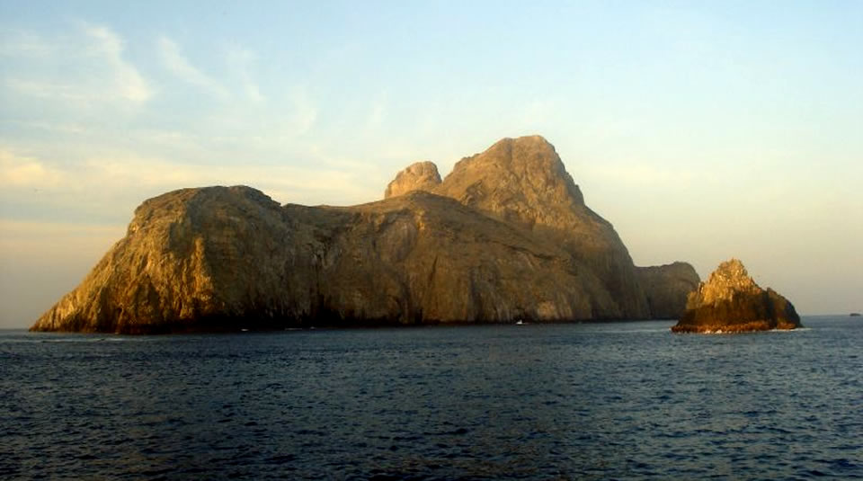
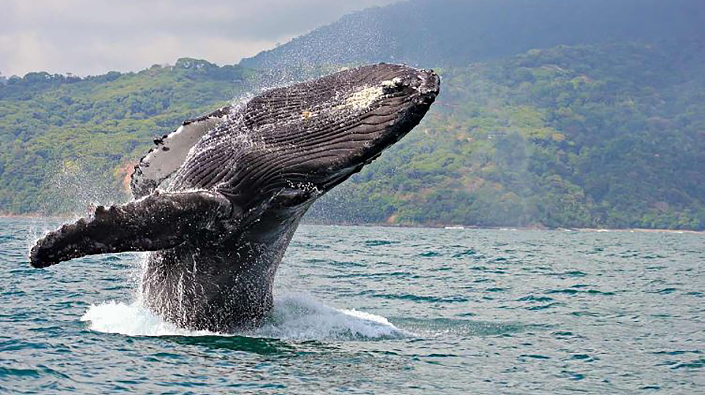
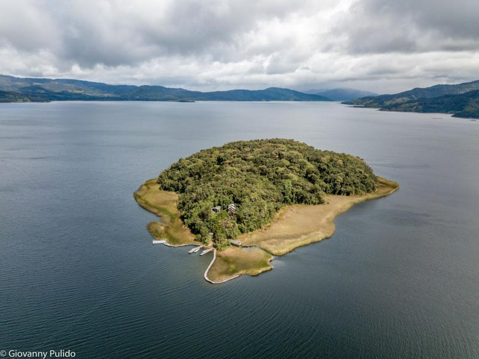

Verde Vivo Blog
Region Insular
Nuestro blog, un santuario virtual de la fauna y flora insular, te invita a explorar la magia de estos ecosistemas únicos. Desde secretos submarinos hasta cimas de volcanes, nos sumergimos en la riqueza natural de estas tierras rodeadas por aguas misteriosas. ¡Acompáñanos en un viaje de descubrimiento, donde cada entrada es una puerta a la fascinante vida que define las islas!

Datos interesantes
Galápagos Unique Wildlife
La región insular alberga las famosas Islas Galápagos, conocidas por su biodiversidad única y especies endémicas como las tortugas gigantes y iguanas marinas.
Flora Singular
En algunas islas, como Socotra en Yemen, se encuentran plantas únicas y extrañas, como el "Drago de Sangre" con forma de paraguas.
Biodiversidad Marina
Las aguas circundantes a menudo albergan una rica biodiversidad marina, desde arrecifes de coral hasta especies marinas únicas.
Amenazas Ambientales
A pesar de su belleza, muchas regiones insulares enfrentan desafíos ambientales, como el cambio climático y la introducción de especies invasoras.
Culturas Indígenas
Algunas islas preservan culturas indígenas únicas, con tradiciones y estilos de vida que se han mantenido a lo largo del tiempo.
Adaptaciones Únicas
La fauna insular a menudo desarrolla adaptaciones únicas, como aves incapaces de volar en islas con depredadores ausentes.
Animales en peligro de extinción
95%
Atelopus zeteki
90%
Rafetus swinhoei
85%
Gymnogyps californianus
70%
Lemur catta
90%
Rhinoceros sondaicus
90%
Phocoena sinus
Islas

Isla Malpelo
también destaca por sus formaciones rocosas impresionantes, con acantilados escarpados que se sumergen en el océano, creando un paisaje dramático y aislado.

Isla Gorgona
Isla Gorgona
hogar de diversas especies, incluyendo una amplia variedad de aves marinas, tortugas marinas, delfines, ballenas y una gran cantidad de peces tropicales

Isla San Cristobal
Una de las atracciones notables de San Cristóbal es "La Lobería", una playa donde se puede observar y convivir de cerca con leones marinos que descansan y juegan en la arena.

Isla de la Corota
Isla de la Corota
Una de las atracciones notables de San Cristóbal es "La Lobería", una playa donde se puede observar y convivir de cerca con leones marinos que descansan y juegan en la arena.
Objetivo Principal
El objetivo principal de Verde Vivo Blog es ofrecer una plataforma informativa y envolvente dedicada a la exploración y comprensión de la rica biodiversidad, los ecosistemas únicos y las fascinantes culturas de las regiones insulares alrededor del mundo. A través de contenido educativo, visualmente atractivo y bien investigado, buscamos crear conciencia sobre la importancia de conservar y apreciar estos entornos insulares. Verde Vivo Blog aspira a convertirse en una fuente inspiradora que motive a los lectores a entender, respetar y participar en la preservación de estos tesoros naturales, destacando su belleza, su papel crucial en la salud del planeta y la necesidad imperante de prácticas sostenibles.
Integrantes
María Camila Vera Ariza
mcamilavera@uts.edu.co
Johan Isaac Silva Machado.
jisilva@uts.edu.co
Angie Julieth Pedrozo Vargas
ajpedrozo@uts.edu.co